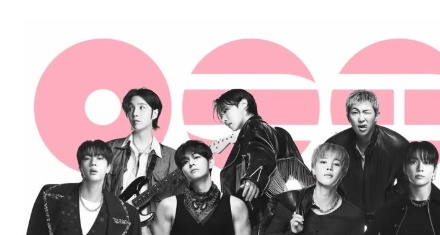
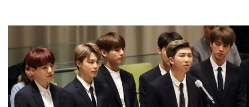

BTS Love Myself: Ámate a ti mismo
A través de la campaña "Love Myself" y sus narrativas de vulnerabilidad, BTS desafió el centralismo cultural de Occidente en la música pop, redefiniendo el concepto de masculinidad y rompiendo barreras lingüísticas mediante una conexión empática que descentraliza la diplomacia cultural tradicional.
La campaña "Love Myself" de BTS fue lanzada en 2018 como una colaboración con UNICEF. Su objetivo principal es apoyar la iniciativa global #ENDviolence, que busca erradicar la violencia, el abuso y el acoso contra la niñez y la juventud. A través de mensajes positivos, y campañas en redes sociales se fomenta la importancia de amarse a uno mismo y respetar a los demás.
Uno de los aspectos más importantes de la campaña es la difusión del mensaje sobre el amor propio y la salud mental "He llegado a amarme a mí mismo por quien fui, por quién soy, y por quien espero llegar a ser" (Kim Namjoon, 2018). BTS ha usado su influencia mundial para inspirar a millones de personas a valorar su identidad, expresar sus emociones y construir vínculos saludables. Además, los integrantes del grupo han participado en eventos de las Naciones Unidas para promover estos valores entre los jóvenes.
Los resultados de la campaña han sido significativos. Según UNICEF, LOVE MYSELF ha alcanzado a personas en casi todos los países del mundo y ha generado millones de interacciones en redes sociales, contribuyendo a crear conciencia sobre la importancia del bienestar emocional y la prevención de la violencia. Así mismo, la iniciativa ha recaudado millones de dólares para apoyar programas destinados a proteger a niños y adolescentes.

Los resultados de la campaña han sido significativos. Según UNICEF, LOVE MYSELF ha alcanzado a personas en casi todos los países del mundo y ha generado millones de interacciones en redes sociales, contribuyendo a crear conciencia sobre la importancia del bienestar emocional y la prevención de la violencia. Asimismo, la iniciativa ha recaudado millones de dólares para apoyar programas destinados a proteger a niños y adolescentes.
REFERENCIA:
UNICEF. (s. f.). LOVE MYSELF: BTS y UNICEF. UNICEF América Latina y el Caribe. Recuperado el 13 de junio de 2026, de https://www.unicef.org/lac/BTS-LoveMyself